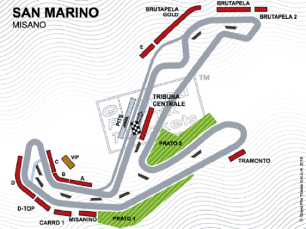
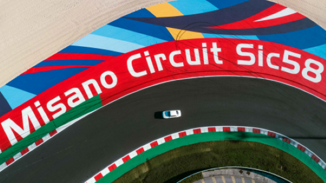
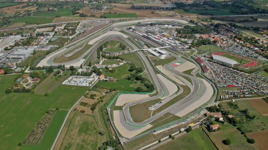

Misano World Circuit, Italy
Located close to the Adriatic coast, the Misano racetrack was designed in 1969 and built between 1970 and 1972. Originally intended to be a flat circuit with simple facilities, it rose to popularity in the 1970s by playing host to Formula Two and later motorcycle races. From 1985 to 1987, it hosted the World Championships. A race in 1989 was controversial because of the slick conditions, which caused riders to protest. (Track Ref.)


The track had major changes in the early 1990s to comply with FIM regulations, including the addition of a new loop and larger facilities, which allowed it to regain World Championship status in 1993. With upgrades in the mid-2000s that resulted in a new layout and safety enhancements, the circuit kept evolving. In 2011, it was renamed after MotoGP driver Marco Simoncelli. (Track Ref.)
Into the 2020s, more improvements were made, such as resurfacing and adding chicanes for competitions like Formula E. While the course kept its distinctive night racing characteristic, recent MotoGP rider comments revealed persistent problems with track grip and surface irregularities. (Track Ref.)
